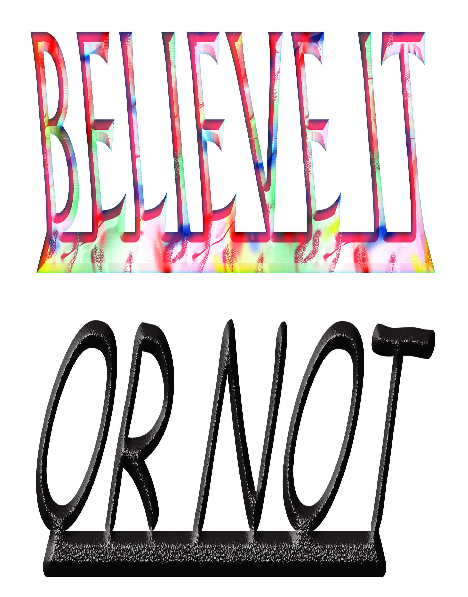

<html>
<head>
    <meta charset="utf-8">
    <meta http-equiv="X-UA-Compatible" content="IE=edge,chrome=1">
    <title>Believe it or not - how can credibility be achieved visually?</title>
    <meta name="description" content="">
    <meta name="viewport" content="width=device-width, initial-scale=1">
	<script src="https://ajax.googleapis.com/ajax/libs/jquery/1.11.0/jquery.min.js"></script>
<script src="parallax.js"></script>
	
    <link rel="stylesheet" href="style.css">
	
	
	
</head>
<body>
	
<div class="parallax-window" data-parallax="scroll" data-image-src="images/piks_002.png"></div>

 <div id="bg">
    
</div>


<div id="footer">

    
    
</div> 


</body>
</html>